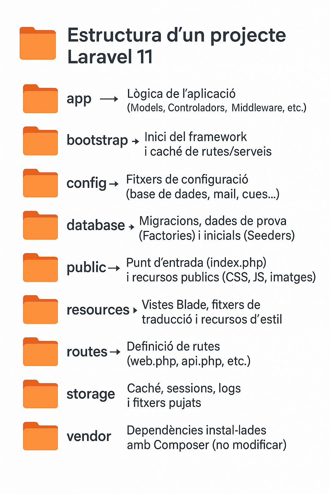

3.- Arquitectura MVC amb Laravel
Duració i criteris d'evaluació
Duració estimada: 16 hores
| Resultat d'aprenentatge | Criteris d'avaluació |
|---|---|
| 5. Desenvolupa aplicacions Web identificant i aplicant mecanismes per a separar el codi de presentació de la lògica de negoci. | a) S'han identificat els avantatges de separar la lògica de negoci dels aspectes de presentació de l'aplicació. b) S'han analitzat i utilitzat mecanismes i frameworks que permeten realitzar aquesta separació i les seues característiques principals. c) S'han utilitzat objectes i controls en el servidor per a generar l'aspecte visual de l'aplicació web en el client. d) S'han utilitzat formularis generats de manera dinàmica per a respondre als esdeveniments de l'aplicació web. e) S'han identificat i aplicat els paràmetres relatius a la configuració de l'aplicació web. f) S'han escrit aplicacions web amb manteniment d'estat i separació de la lògica de negoci. g) S'han aplicat els principis i patrons de disseny de la programació orientada a objectes. h) S'ha provat i documentat el codi. |
SA 3.1 MVC i instal·lació de Laravel¶
🧩 Avantatges de la separació de capes¶
🔍 Què és la separació de responsabilitats?¶
En el desenvolupament d’aplicacions web, separar la lògica de negoci (com es processen les dades) de la presentació (com es mostren) és essencial per crear projectes escalables i fàcils de mantindre.
Problemes quan no hi ha separació¶
- Codi desordenat i difícil de llegir.
- Modificar la interfície pot trencar la lògica i viceversa.
- Dificultat per treballar en equip.
Beneficis¶
| Avantatge | Descripció |
|---|---|
| Mantenibilitat | És més fàcil modificar el codi, ja que cada part està separada. |
| Reutilització | El codi es pot reutilitzar en diferents parts del projecte. |
| Escalabilitat | És més senzill afegir noves funcionalitats sense trencar les existents. |
| Treball en equip | Permet dividir tasques entre programadors backend i frontend. |
| Testabilitat | Podem fer proves unitàries de la lògica sense necessitat de la interfície. |
| Seguretat | Mantindre la lògica separada ajuda a controlar millor les entrades i sortides. |
Comparació¶
- Aplicació monolítica: tot el codi barrejat (HTML, SQL, lògica PHP).
- MVC: cada capa té la seua responsabilitat i només interactua amb les necessàries.
💡 Exemple senzill¶
Sense separació:
<?php
// Exemple dolent: lògica i presentació mesclades
$conn = new PDO('mysql:host=localhost;dbname=test', 'root', '');
$sql = "SELECT * FROM usuaris";
$result = $conn->query($sql);
echo "<ul>";
foreach ($result as $usuari) {
echo "<li>" . $usuari['nom'] . "</li>";
}
echo "</ul>";
```
Amb separació:
```php
// Controlador (lògica)
$usuaris = Usuari::tots();
// Vista (presentació - Blade)
<ul>
@foreach ($usuaris as $usuari)
<li>{{ $usuari->nom }}</li>
@endforeach
</ul>
Avantatges de la separació¶
| Avantatge | Descripció |
|---|---|
| Mantenibilitat | És més fàcil modificar el codi, ja que cada part està separada. |
| Reutilització | El codi es pot reutilitzar en diferents parts del projecte. |
| Escalabilitat | És més senzill afegir noves funcionalitats sense trencar les existents. |
| Treball en equip | Permet dividir tasques entre programadors backend i frontend. |
| Testabilitat | Podem fer proves unitàries de la lògica sense necessitat de la interfície. |
| Seguretat | Mantindre la lògica separada ajuda a controlar millor les entrades i sortides. |
En resum, separar la lògica de negoci dels aspectes de presentació és una bona pràctica fonamental per desenvolupar aplicacions web robustes, escalables i fàcils de mantindre. Aquesta separació s’aplica de forma natural amb frameworks com Laravel, que segueixen el patró MVC (Model-Vista-Controlador).
🔧 Frameworks i mecanismes de separació¶
Un framework és un conjunt d'eines i biblioteques que facilita el desenvolupament d'aplicacions seguint una estructura predefinida i bones pràctiques.
Característiques generals:¶
- Facilita la separació de responsabilitats (MVC).
- Redueix el temps de desenvolupament.
- Estableix un patró coherent i mantenible.
- Incorpora sistemes de seguretat, validació, rutes i molt més.
🧱 Patró MVC (Model – Vista – Controlador)¶
El patró MVC és un patró de disseny que separa clarament tres responsabilitats:
| Component | Funció principal |
|---|---|
| Model | Gestiona les dades i la lògica de negoci. |
| Vista | Mostra la informació a l’usuari. |
| Controlador | Gestiona les peticions i coordina el Model i la Vista. |

🚀 Laravel com a framework MVC¶
Laravel és un framework PHP modern que aplica de manera nativa el patró MVC.
app/
├── Http/
│ └── Controllers/ → Controladors (C)
├── Models/ → Models (M)
resources/
└── views/ → Vistes Blade (V)
└── routes/ → Rutes (R)
🧪 Exemple bàsic¶
Ruta:
Route::get('/usuaris', [UsuariController::class, 'index']);
Controlador:
class UsuariController extends Controller {
public function index() {
$usuaris = Usuari::all();
return view('usuaris.index', compact('usuaris'));
}
}
class Usuari extends Model {
protected $table = 'usuaris';
}
<ul>
@foreach($usuaris as $usuari)
<li>{{ $usuari->nom }}</li>
@endforeach
</ul>
📦 Instal·lació de Laravel¶
🔧 Crear una aplicació Laravel amb Docker (Sail)¶
Si estàs desenvolupant en Linux i ja tens Docker Compose instal·lat, pots crear una aplicació Laravel nova amb una simple comanda de term
1️⃣ Preparació (només si utilitzes Docker Desktop per a Linux)
Si estàs utilitzant Docker Desktop per a Linux, executa aquesta comanda:
docker context use default
2️⃣ Crear el projecte
Executa aquesta comanda per crear una nova aplicació Laravel en una carpeta anomenada example-app
curl -s https://laravel.build/example-app | bash
Per descomptat, podeu canviar "exemple-app" en aquest URL a qualsevol cosa que vulgueu - només assegureu-vos que el nom de l'aplicació només conté caràcters alfanumèrics, guions i guions baixos. El directori de l'aplicació Laravel es crearà dins del directori des del qual executeu l'ordre.
3️⃣ Iniciar Laravel Sail
Ara podeu navegar al directori de l'aplicació i iniciar Laravel Sail. Laravel Sail proporciona una interfície senzilla de línia d'ordres per a interactuar amb la configuració predeterminada de l'acoblador Laravel:
cd exemple-app && ./vendor/bin/sail up &
4️⃣ Executar les migracions
Una vegada arrancats els contenidors, pots aplicar les migracions:
./vendor/bin/sail artisan migrate
Ara pots obrir l’aplicació en el navegador en http://localhost.
Estructura de carpetes simplificada¶

⚙️ Configuració bàsica en Laravel¶
Laravel gestiona la configuració en el fitxer .env i en fitxers del directori config/.
.env → Conté les variables de configuració de l’entorn (nom de l’app, base de dades, correu…).
config/ → Conté fitxers PHP amb configuracions globals (app.php, database.php, etc.).
📌 Exemple .env mínim:
APP_NAME="LaravelApp"
APP_ENV=local
APP_DEBUG=true
DB_CONNECTION=mysql
DB_HOST=127.0.0.1
DB_DATABASE=laravel
DB_USERNAME=root
DB_PASSWORD=
php artisan list # totes les comandes
php artisan route:list # rutes registrades
php artisan make:model Nom -m # model + migració
php artisan migrate # aplicar migracions
Bones pràctiques
Mai posar secrets al codi; usa .env i variables d’entorn. Revisa APP_ENV, APP_DEBUG, APP_URL, timezone, locale.
SA 3.2 CRUD bàsic en Laravel¶

🛣️ Rutes¶
Les rutes web viuen a routes/web.php. Importa les classes amb use.
Simple
use Illuminate\Support\Facades\Route;
Route::get('/salut', fn() => 'Hola món!');
```
**Amb Paràmetres (i opcionals)**
```php
Route::get('/salut/{nom}', fn(string $nom) => "Bon dia, $nom");
Route::get('/salut/{nom?}', fn(?string $nom = 'Convidat') => "Bon dia, $nom");
Amb Validació bàsica (regex helpers)
Route::get('/producte/{id}', fn(int $id) => "Producte ID: $id")->whereNumber('id');
Amb Route Model Binding (recomanat)
use App\Models\Producte;
Route::get('/productes/{producte}', fn(Producte $producte) => $producte->nom);
Amb nom
Route::get('/contacte', fn() => 'Pàgina de contacte')->name('contacte');
// Blade: <a href="{{ route('contacte') }}">Contacte</a>
Grups (prefix + middleware)
Route::prefix('admin')->middleware('auth')->group(function () {
Route::get('/dashboard', fn() => 'Admin Dashboard');
Route::get('/usuaris', fn() => 'Admin Usuaris');
});
Controladors i recursos
use App\Http\Controllers\UsuariController;
use App\Http\Controllers\ArticleController;
Route::get('/usuari/{id}', [UsuariController::class, 'mostrar']);
Route::resource('articles', ArticleController::class);
// variants:
Route::resource('articles', ArticleController::class)->only(['index','show']);
🪟 Vistes i Blade (essencial)¶
Vistes en resources/views. No hi posem lògica de negoci.
Mostrar vista i passar dades
Route::get('/', fn() => view('welcome'));
Route::get('/inici', function () {
$nom = 'Nacho';
return view('inici', compact('nom')); // o ['nom'=>$nom] o ->with('nom',$nom)
});
resources/views/inici.blade.php
Benvingut/da, {{ $nom }}
🗡️ Sintaxi Blade bàsica¶
{{-- Comentari Blade --}}
Hola, {{ $nom }} {{-- escapada (segura) --}}
{!! $html !!} {{-- sense escapar (atenció XSS) --}}
@if($condicio) ... @elseif($altra) ... @else ... @endif
@foreach($items as $it) {{ $it }} @endforeach
@forelse($items as $it) {{ $it }} @empty Sense items @endforelse
📰 Layouts (herència)¶
resources/views/layouts/app.blade.php
<!doctype html>
<html>
<head>
<title>@yield('title', config('app.name'))</title>
@vite(['resources/css/app.css','resources/js/app.js'])
</head>
<body>
@include('partials.nav')
<main>@yield('content')</main>
</body>
</html>
@extends('layouts.app')
@section('title','Inici')
@section('content')
<h1>Benvingut/da!</h1>
@endsection
🧩 Components Blade¶
Els Components Blade permeten definir elements reutilitzables:
1️⃣ Crear component:
php artisan make:component Alert
2️⃣ Definir la lògica:
class Alert extends Component {
public $type;
public function __construct($type) {
$this->type = $type;
}
public function render() {
return view('components.alert');
}
}
3️⃣ Vista del component:
{{ $slot }}
4️⃣ Utilitzar-lo en una vista:
<x-alert >Missatge Enviat!</x-alert>
⚙️ Controladors (organitzar la lògica)¶
Crear controlador
php artisan make:controller PruebaController
Controlador de recursos (CRUD)
```bash php artisan make:controller ProducteController --resource
Rutes:
```php
use App\Http\Controllers\ProducteController;
Route::resource('productes', ProducteController::class);
🦴🏗️Esquelet típic (amb validació i binding)¶
use App\Models\Producte;
use Illuminate\Http\Request;
class ProducteController extends Controller
{
public function index() {
$productes = Producte::latest()->get();
return view('productes.index', compact('productes'));
}
public function create() {
return view('productes.create');
}
public function store(Request $request) {
$validated = $request->validate([
'nom' => 'required|string|max:255',
'preu' => 'required|numeric|min:0',
]);
Producte::create($validated);
return redirect()->route('productes.index')->with('ok','Creat!');
}
public function edit(Producte $producte) {
return view('productes.edit', compact('producte'));
}
public function update(Request $request, Producte $producte) {
$validated = $request->validate([
'nom' => 'required|string|max:255',
'preu' => 'required|numeric|min:0',
]);
$producte->update($validated);
return redirect()->route('productes.index')->with('ok','Actualitzat!');
}
public function destroy(Producte $producte) {
$producte->delete();
return redirect()->route('productes.index')->with('ok','Esborrat!');
}
}
📋 Formularis dinàmics, POST i validació¶
Vistes per al CRUD resources/views/productes/index.blade.php
<h1>Productes</h1>
@if(session('ok'))
<div class="alert alert-success">{{ session('ok') }}</div>
@endif
<a href="{{ route('productes.create') }}">Nou producte</a>
<ul>
@forelse($productes as $p)
<li>
{{ $p->nom }} — {{ $p->preu }} €
<a href="{{ route('productes.edit', $p) }}">Editar</a>
<form action="{{ route('productes.destroy', $p) }}" method="POST" style="display:inline">
@csrf @method('DELETE')
<button type="submit">Esborrar</button>
</form>
</li>
@empty
<li>No hi ha productes</li>
@endforelse
</ul>
<h1>Nou producte</h1>
<form method="POST" action="{{ route('productes.store') }}">
@csrf
<label>Nom</label>
<input name="nom" value="{{ old('nom') }}">
@error('nom') <small>{{ $message }}</small> @enderror
<label>Preu</label>
<input name="preu" value="{{ old('preu') }}">
@error('preu') <small>{{ $message }}</small> @enderror
<button type="submit">Guardar</button>
</form>
resources/views/productes/edit.blade.php
<h1>Editar producte</h1>
<form method="POST" action="{{ route('productes.update', $producte) }}">
@csrf @method('PUT')
<label>Nom</label>
<input name="nom" value="{{ old('nom', $producte->nom) }}">
@error('nom') <small>{{ $message }}</small> @enderror
<label>Preu</label>
<input name="preu" value="{{ old('preu', $producte->preu) }}">
@error('preu') <small>{{ $message }}</small> @enderror
<button type="submit">Actualitzar</button>
</form>
🗄️ Model Eloquent¶
app/Models/Producte.php
namespace App\Models;
use Illuminate\Database\Eloquent\Model;
class Producte extends Model
{
protected $fillable = ['nom','preu'];
}
🏗️ Migració¶
Schema::create('productes', function (Blueprint $table) {
$table->id();
$table->string('nom');
$table->decimal('preu', 8, 2);
$table->timestamps();
});
⚡ Recursos del client amb Vite¶
Instal·lar dependències frontend
npm install
Config per defecte (resum) vite.config.js
import { defineConfig } from 'vite';
import laravel from 'laravel-vite-plugin';
export default defineConfig({
plugins: [laravel(['resources/css/app.css','resources/js/app.js'])],
});
Carregar a layout Blade
@vite(['resources/css/app.css','resources/js/app.js'])
Executar
npm run dev # HMR
npm run build # producció
SA3.3 Formularis dinàmics i manteniment d’estat¶
En Laravel, els formularis es creen amb Blade i s’envien als controladors. La validació i el manteniment d’estat (sessions, old()) són clau per a una bona UX (User Experience).
📋 Formularis amb Blade¶
- Sempre inclou
@csrfper protegir contra CSRF. - Per a PUT/PATCH/DELETE, usa
@method('PUT'), etc.
{{-- resources/views/productes/create.blade.php --}}
<h1>Nou producte</h1>
<form method="POST" action="{{ route('productes.store') }}">
@csrf
<label>Nom</label>
<input name="nom" value="{{ old('nom') }}">
@error('nom') <small class="error">{{ $message }}</small> @enderror
<label>Preu</label>
<input name="preu" value="{{ old('preu') }}">
@error('preu') <small class="error">{{ $message }}</small> @enderror
<label>Categoria</label>
<select name="categoria">
<option value="">-- Selecciona --</option>
<option value="hardware" @selected(old('categoria')==='hardware')>Hardware</option>
<option value="software" @selected(old('categoria')==='software')>Software</option>
</select>
<label>
<input type="checkbox" name="actiu" value="1" @checked(old('actiu'))>
Actiu
</label>
<button type="submit">Guardar</button>
</form>
Mantenir valors
old('camp') manté el valor introduït si la validació falla.
Validació al controlador (ràpida)¶
public function store(\Illuminate\Http\Request $request)
{
$validated = $request->validate([
'nom' => ['required','string','max:255'],
'preu' => ['required','numeric','min:0'],
'categoria' => ['nullable','in:hardware,software'],
'actiu' => ['nullable','boolean'],
]);
$validated['actiu'] = (bool)($validated['actiu'] ?? false);
\App\Models\Producte::create($validated);
return redirect()
->route('productes.index')
->with('ok','Producte creat correctament'); // flash message (sessió)
}
Missatges d’error a la vista: @error('camp') ... @enderror i {{ $message }}.
Validació amb Form Request (recomanat)¶
php artisan make:request StoreProducteRequest
// app/Http/Requests/StoreProducteRequest.php
class StoreProducteRequest extends FormRequest {
public function authorize(): bool
{
return true;
}
public function rules(): array {
return [
'nom' => ['required','string','max:255'],
'preu' => ['required','numeric','min:0'],
'categoria' => ['nullable','in:hardware,software'],
'actiu' => ['nullable','boolean'],
];
}
}
public function store(\App\Http\Requests\StoreProducteRequest $request)
{
\App\Models\Producte::create($request->validated());
return redirect()->route('productes.index')->with('ok','Creat!');
}
Manteniment de l'estat amb sessions¶
// Escriure en sessió
session(['tema' => 'fosc']);
// Llegir amb valor per defecte
$tema = session('tema', 'clar');
// Flash (1 petició)
return back()->with('ok', 'Acció completada');
blade
@if(session('ok'))
<div class="alert alert-success">{{ session('ok') }}</div>
@endif
Formularis que responen a l'estat¶
{{-- canvia el text del botó segons si l’usuari està logat --}}
<button>
{{ auth()->check() ? 'Comprar ara' : 'Inicia sessió per comprar' }}
</button>
SA3.4 Introducció a PHPDoc en Laravel¶
PHPDoc és un estàndard de documentació per a codi PHP que utilitza comentaris especials per descriure mètodes, classes, propietats i constants.
En Laravel, ajuda a: - Entendre més ràpid el codi. - Millorar l’autocompletat a l’IDE (VS Code, PhpStorm…). - Generar documentació automàtica. - Evitar errors per mal ús de mètodes i dades.
📝 Sintaxi bàsica¶
Un comentari PHPDoc comença amb /* i acaba amb /. Dins, utilitzem etiquetes per descriure elements.
/**
* Descripció breu del que fa el mètode.
*
* Descripció més detallada (opcional).
*
* @param Tipus $nomParam Descripció del paràmetre
* @return TipusRetorn Descripció del retorn
*/
📌 Exemple en un controlador de Laravel
/**
* Mostra el llistat de productes.
*
* @return \Illuminate\View\View
*/
public function index()
{
$productes = Producte::all();
return view('productes.index', compact('productes'));
}
/**
* Guarda un nou producte a la base de dades.
*
* @param \Illuminate\Http\Request $request
* @return \Illuminate\Http\RedirectResponse
*/
public function store(Request $request)
{
$validated = $request->validate([
'nom' => 'required|string|max:255',
'preu' => 'required|numeric|min:0',
]);
Producte::create($validated);
return redirect()->route('productes.index')->with('success', 'Producte creat correctament.');
}
🔖 Etiquetes més habituals¶
Etiqueta Significat
@param Tipus i nom de cada paràmetre que rep el mètode.
@return Tipus del valor retornat.
@var Tipus d’una variable o propietat.
@throws Tipus d’excepció que pot llençar-se.
@property Propietats “màgiques” d’una classe (per Eloquent).
@method Mètodes “màgics” que no estan explícits al codi.
📚 PHPDoc en models Eloquent¶
Quan Laravel crea models, moltes propietats i mètodes no apareixen al codi, però hi són gràcies a Eloquent. Podem documentar-los així:
/**
* App\Models\Producte
*
* @property int $id
* @property string $nom
* @property float $preu
* @method static \Illuminate\Database\Eloquent\Builder|Producte whereNom($value)
*/
class Producte extends Model
{
protected $fillable = ['nom', 'preu'];
}
💡 Bones pràctiques¶
- Documenta tots els mètodes públics.
- Usa tipus complets (no array, sinó string[] o int[] quan siga possible).
- Actualitza PHPDoc quan canvies la signatura d’un mètode.
- No sobrecarregues amb informació obvia; sigues clar i útil.
SA3.5 Patrons de disseny orientats a objectes (a pasar al tema posterior)¶
Principis SOLID (microresum)¶
Single Responsibility: cada classe, una responsabilitat. Open/Closed: oberta a extensió, tancada a modificació. Liskov: substitució segura de tipus base per derivats. Interface Segregation: interfícies xicotetes i específiques. Dependency Inversion: dependències d’abstraccions, no implementacions.
Patrons útils en Laravel¶
DAO / Repository: aïlla l’accés a dades. Service (Domini / Aplicació): conté la lògica de negoci (regles). Factory: creació d’objectes (ja l’uses amb Models Factory).
Arquitectura recomanada
Controller -> Service -> Repository -> Eloquent Model (presentació) (negoci) (accés dades) (ORM)
Exemple: Repository + Service¶
Interfície del Repositori // app/Repositories/ProducteRepository.php
namespace App\Repositories;
use App\Models\Producte;
use Illuminate\Support\Collection;
interface ProducteRepository {
public function tots(): Collection;
public function crear(array $dades): Producte;
public function actualitzar(Producte $p, array $dades): Producte;
public function esborrar(Producte $p): void;
}
Implementació Eloquent // app/Repositories/EloquentProducteRepository.php
namespace App\Repositories;
use App\Models\Producte;
use Illuminate\Support\Collection;
class EloquentProducteRepository implements ProducteRepository
{
public function tots(): Collection { return Producte::latest()->get(); }
public function crear(array $d): Producte { return Producte::create($d); }
public function actualitzar(Producte $p, array $d): Producte { $p->update($d); return $p; }
public function esborrar(Producte $p): void { $p->delete(); }
}
Servei de negoci // app/Services/ProducteService.php
namespace App\Services;
use App\Models\Producte;
use App\Repositories\ProducteRepository;
class ProducteService
{
public function __construct(private ProducteRepository $repo) {}
public function llistar() { return $this->repo->tots(); }
public function crear(array $dades): Producte
{
// Ex. lògica: descompte, normalització...
if (isset($dades['preu'])) {
$dades['preu'] = max(0, (float)$dades['preu']);
}
return $this->repo->crear($dades);
}
public function actualitzar(Producte $p, array $dades): Producte
{
return $this->repo->actualitzar($p, $dades);
}
public function esborrar(Producte $p): void
{
$this->repo->esborrar($p);
}
}
Binding al contenidor (Service Provider)
// app/Providers/AppServiceProvider.php
use App\Repositories\ProducteRepository;
use App\Repositories\EloquentProducteRepository;
public function register(): void
{
$this->app->bind(ProducteRepository::class, EloquentProducteRepository::class);
}
Controlador depenent del Servei // app/Http/Controllers/ProducteController.php
use App\Models\Producte;
use App\Services\ProducteService;
use Illuminate\Http\Request;
class ProducteController extends Controller
{
public function __construct(private ProducteService $svc) {}
public function index() { return view('productes.index', ['productes'=>$this->svc->llistar()]); }
public function store(Request $r) { $this->svc->crear($r->validate(['nom'=>'required','preu'=>'required|numeric|min:0'])); return back()->with('ok','Creat'); }
public function update(Request $r, Producte $producte) { $this->svc->actualitzar($producte, $r->validate(['nom'=>'required','preu'=>'required|numeric|min:0'])); return back()->with('ok','Actualitzat'); }
public function destroy(Producte $producte) { $this->svc->esborrar($producte); return back()->with('ok','Esborrat'); }
}
Exercicis¶
🧩 Bateria d'Exercicis Solucionats per al CRUD de Laravel : Guia d'Equips de Futbol Femení¶
L'objectiu d'aquest exercici és construir una aplicació Laravel per gestionar una guia d'equips de futbol femení. Aprendrem a configurar rutes, controladors, vistes i a passar dades utilitzant les funcionalitats de Laravel.
Pas 1: Configurar el projecte¶
- Crear un projecte Laravel anomenat
futbol-femeni:
curl -s "https://laravel.build/futbol-femeni?with=mysql,mailpit" | bash
Problemes: des de dins de l'institut no funciona perquè els repositoris estan capats.
Solució:
- Quan falle . Copiar la següent carpeta a la carpeta del projecte.
- Canviar este troç del docker-compose.yml per este:
laravel.test:
build:
context: './vendor/laravel/sail/runtimes/8.3'
laravel.test:
build:
context: './docker'
i despres acabem la instal·lació:
cd futbol-femeni
./vendor/bin/sail up
./vendor/bin/sail artisan migrate
- Qüestió: Per què és important tenir una estructura clara al projecte Laravel?
Pas 2: Definir la ruta inicial¶
- Editar
routes/web.phpper crear una ruta inicial:
Route::get('/', function () {
return "Benvingut a la Guia d"Equips de Futbol Femení!";
});
- Qüestió: Quina diferència hi ha entre definir una ruta directa i una que utilitza un controlador?
Pas 3: Crear un controlador¶
- Generar un controlador anomenat
EquipController:
./vendor/bin/sail artisan make:controller EquipController
- Afegir un mètode
indexal controlador:
public function index() {
return view('equips.index');
}
- Definir una ruta per al mètode
index:
Route::get('/equips', [EquipController::class, 'index']);
- Qüestió: Per què és recomanable separar la lògica en controladors?
Pas 4: Crear una vista¶
- Crear una vista a
resources/views/equips/index.blade.php:
<h1>Guia d'Equips</h1>
- Qüestió: Què fa especial el motor de plantilles Blade en comparació amb HTML estàndard?
Pas 5: Passar dades a la vista¶
- Modifica el mètode
indexper passar un array d'equips:
public function index() {
$equips = ['Barça Femení', 'Atlètic de Madrid', 'Real Madrid Femení'];
return view('equips.index', compact('equips'));
}
- Afegeix un bucle
@foreacha la vista:
<h1>Guia d'Equips</h1>
<ul>
@foreach($equips as $equip)
<li>{{ $equip }}</li>
@endforeach
</ul>
- Qüestió: Com podem utilitzar Blade per fer el codi més segur?
Pas 6: Afegir estils amb Vite¶
- Crear un fitxer CSS a
resources/css/equips.css:
body {
font-family: Arial, sans-serif;
}
h1 {
color: darkblue;
}
nav ul {
list-style-type: none;
padding: 0;
}
nav ul li {
display: inline;
margin-right: 15px;
}
nav ul li a {
text-decoration: none;
color: darkblue;
}
nav ul li a:hover {
text-decoration: underline;
}
- Incloure el fitxer CSS amb
@vite:
Modificar el fitxer vite.config.js per a que inclogui el fitxer CSS:
import laravel from 'laravel-vite-plugin';
export default defineConfig({
plugins: [
laravel({
input: [
'resources/css/app.css',
'resources/css/equips.css',
'resources/js/app.js'],
refresh: true,
}),
],
});
i incloure el fitxer CSS a la vista:
@vite('resources/css/equips.css')
- Executar Vite:
npm install
npm run build
- Qüestió: Què és Hot Module Replacement (HMR) i com ajuda en el desenvolupament?
Pas 7: Ampliar funcionalitats¶
- Afegir més camps als equips:
public function index() {
$equips = [
['nom' => 'Barça Femení', 'estadi' => 'Camp Nou', 'titols' => 30],
['nom' => 'Atlètic de Madrid', 'estadi' => 'Cívitas Metropolitano', 'titols' => 10],
['nom' => 'Real Madrid Femení', 'estadi' => 'Alfredo Di Stéfano', 'titols' => 5],
];
return view('equips.index', compact('equips'));
}
- Actualitzar la vista per mostrar una taula:
<h1>Guia d'Equips</h1>
<table>
<thead>
<tr>
<th>Nom</th>
<th>Estadi</th>
<th>Títols</th>
</tr>
</thead>
<tbody>
@foreach($equips as $equip)
<tr>
<td>{{ $equip['nom'] }}</td>
<td>{{ $equip['estadi'] }}</td>
<td>{{ $equip['titols'] }}</td>
</tr>
@endforeach
</tbody>
</table>
- Crear una nova vista parcial per al menú de navegació:
- Afegeix un fitxer nou a resources/views/partials/menu.blade.php amb el contingut següent:
<nav>
<ul>
<li><a href="/">Inici</a></li>
<li><a href="/equips">Guia d'Equips</a></li>
<li><a href="/estadis">Llistat d'Estadis</a></li>
</ul>
</nav>
- Modifica la vista resources/views/equips/index.blade.php per incloure el menú amb la directiva @include:
@include('partials.menu')
- Crear una plantilla base
- Crea el fitxer resources/views/layouts/app.blade.php:
<!DOCTYPE html>
<html lang="ca">
<head>
<meta charset="UTF-8">
<meta http-equiv="X-UA-Compatible" content="IE=edge">
<meta name="viewport" content="width=device-width, initial-scale=1.0">
<title>@yield('title','Guia de futbol femení')</title>
@vite(['resources/css/app.css', 'resources/css/equips.css'])
</head>
<body>
<header>
@include('partials.menu')
</header>
<main>
@yield('content')
</main>
<footer>
<p>© 2024 Guia de Futbol Femení</p>
</footer>
</body>
</html>
- Modifica la vista resources/views/equips/index.blade.php per heretar de la plantilla base:
@extends('layouts.app')
@section('title', " Guia d'Equips" )
@section('content')
<h1>Guia d'Equips</h1>
<table>
<thead>
<tr>
<th>Nom</th>
<th>Estadi</th>
<th>Títols</th>
</tr>
</thead>
<tbody>
@foreach($equips as $equip )
<tr>
<td class="equip"><h2>{{ $equip['nom'] }}</h2></td>
<td class="equip">{{ $equip['estadi'] }}</td>
<td class="equip">{{ $equip['titols'] }}</td>
</tr>
@endforeach
</tbody>
</table>
@endsection
- Crear un component per als equips
- Executa la següent comanda per crear un component Blade anomenat Equip:
./vendor/bin/sail artisan make:component Equip
- Afegeix els estils al fitxer CSS resources/css/equips.css:
.equip {
border: 1px solid #ddd;
padding: 10px;
margin: 10px 0;
border-radius: 5px;
box-shadow: 2px 2px 5px rgba(0, 0, 0, 0.1);
}
.equip h2 {
margin: 0;
color: darkblue;
}
<div class="equip">
<h2>{{ $nom }}</h2>
<p><strong>Estadi:</strong> {{ $estadi }}</p>
<p><strong>Títols:</strong> {{ $titols }}</p>
</div>
public function show($id) {
$equips = [
['nom' => 'Barça Femení', 'estadi' => 'Camp Nou', 'titols' => 30],
['nom' => 'Atlètic de Madrid', 'estadi' => 'Cívitas Metropolitano', 'titols' => 10],
['nom' => 'Real Madrid Femení', 'estadi' => 'Alfredo Di Stéfano', 'titols' => 5],
];
$equip = $equips[$id];
return view('equips.show', compact('equip'));
}
- Crea la vista resources/views/equips/show.blade.php per utilitzar el component:
@extends('layouts.app')
@section('title', " Guia d'Equips" )
@section('content')
<x-equip
:nom="$equip['nom']"
:estadi="$equip['estadi']"
:titols="$equip['titols']"
/>
@endsection
- Modifica el component (app/Views/components/Equip.php) per utilitzar les dades passades:
public function __construct(
public string $nom,
public string $estadi,
public int $titols ) { }
- Crea la ruta:
Route::get('/equips/{id}', [EquipController::class, 'show']);
-
Qüestió: Com podem fer per no repetir l'array d'equips en el controlador ?
-
Qüestió: Què és un component Blade i quins avantatges té respecte a les vistes parcials?
-
Qüestio: Què permet la directiva @yield i com es relaciona amb @section?
9. Qüestió: Per què és important tenir una plantilla base en una aplicació web?¶
Pas 8: Refactoritzar el codi¶
- No repetir l'array d'equips en el controlador
public $equips = [
['nom' => 'Barça Femení', 'estadi' => 'Camp Nou', 'titols' => 30],
['nom' => 'Atlètic de Madrid', 'estadi' => 'Cívitas Metropolitano', 'titols' => 10],
['nom' => 'Real Madrid Femení', 'estadi' => 'Alfredo Di Stéfano', 'titols' => 5],
];
public function index() {
$equips = $this->equips;
return view('equips.index', compact('equips'));
}
public function show($id) {
$equip = $this->equips[$id];
return view('equips.show', compact('equip'));
}
- Passar les rutes a resource
Route::resource('equips', EquipController::class);
@foreach($equips as $key => $equip)
<tr>
<td><a href="{{ route('equips.show', $key) }}">{{ $equip['nom'] }}</a></td>
<td>{{ $equip['estadi'] }}</td>
<td>{{ $equip['titols'] }}</td>
</tr>
@endforeach
app.blade.php
<!DOCTYPE html>
<html lang="ca">
<head>
<meta charset="UTF-8">
<meta http-equiv="X-UA-Compatible" content="IE=edge">
<meta name="viewport" content="width=device-width, initial-scale=1.0">
<title>@yield('title', 'Guia de futbol femení')</title>
@vite(['resources/css/app.css'])
</head>
<body class="font-sans bg-gray-100 text-gray-900">
<header class="bg-blue-800 text-white p-4">
@include('partials.menu')
</header>
<main class="container mx-auto p-6">
@yield('content')
</main>
<footer class="bg-blue-800 text-white text-center p-4">
<p>© 2024 Guia de Futbol Femení</p>
</footer>
</body>
</html>
index.blade.php
@extends('layouts.app')
@section('title', "Guia d'Equips")
@section('content')
<h1 class="text-3xl font-bold text-blue-800 mb-6">Guia d'Equips</h1>
<table class="w-full border-collapse border border-gray-300">
<thead class="bg-gray-200">
<tr>
<th class="border border-gray-300 p-2">Nom</th>
<th class="border border-gray-300 p-2">Estadi</th>
<th class="border border-gray-300 p-2">Títols</th>
</tr>
</thead>
<tbody>
@foreach($equips as $key => $equip)
<tr class="hover:bg-gray-100">
<td class="border border-gray-300 p-2">
<a href="{{ route('equips.show', $key) }}" class="text-blue-700 hover:underline">{{ $equip['nom'] }}</a>
</td>
<td class="border border-gray-300 p-2">{{ $equip['estadi'] }}</td>
<td class="border border-gray-300 p-2">{{ $equip['titols'] }}</td>
</tr>
@endforeach
</tbody>
</table>
@endsection
equip.blade.php
<div class="equip border rounded-lg shadow-md p-4 bg-white">
<h2 class="text-xl font-bold text-blue-800">{{ $nom }}</h2>
<p><strong>Estadi:</strong> {{ $estadi }}</p>
<p><strong>Títols:</strong> {{ $titols }}</p>
</div>
menu.blade.php
<nav>
<ul class="flex space-x-4">
<li><a href="/" class="text-white hover:underline">Inici</a></li>
<li><a href="/equips" class="text-white hover:underline">Guia d'Equips</a></li>
<li><a href="/estadis" class="text-white hover:underline">Llistat d'Estadis</a></li>
</ul>
</nav>
Pas 9.Afegir un formulari per crear equips i guardar-los en sessió¶
- Afegir mètodes al controlador
// app/Http/Controllers/EquipController.php
public function create() {
return view('equips.create');
}
public function store(Request $request) {
// Validació de dades
$validated = $request->validate([
'nom' => 'required|min:3',
'estadi' => 'required',
'titols' => 'required|integer|min:0',
]);
// Recuperar equips de la sessió o array buit
$equips = Session::get('equips', $this->equips);
// Afegir el nou equip
$equips[] = [
'nom' => $validated['nom'],
'estadi' => $validated['estadi'],
'titols' => $validated['titols'],
];
// Guardar a la sessió
Session::put('equips', $equips);
// Redirigir amb missatge d'èxit
return redirect()->route('equips.index')->with('success', 'Equip afegit correctament!');
}
<!-- resources/views/equips/create.blade.php -->
@extends('layouts.app')
@section('title', 'Afegir nou equip')
@section('content')
<h1 class="text-2xl font-bold mb-4">Afegir nou equip</h1>
@if ($errors->any())
<div class="bg-red-100 text-red-700 p-2 mb-4">
<ul>
@foreach ($errors->all() as $error)
<li>{{ $error }}</li>
@endforeach
</ul>
</div>
@endif
<form action="{{ route('equips.store') }}" method="POST" class="space-y-4">
@csrf
<div>
<label for="nom" class="block font-bold">Nom:</label>
<input type="text" name="nom" id="nom" value="{{ old('nom') }}" class="border p-2 w-full">
</div>
<div>
<label for="estadi" class="block font-bold">Estadi:</label>
<input type="text" name="estadi" id="estadi" value="{{ old('estadi') }}" class="border p-2 w-full">
</div>
<div>
<label for="titols" class="block font-bold">Títols:</label>
<input type="number" name="titols" id="titols" value="{{ old('titols') }}" class="border p-2 w-full">
</div>
<button type="submit" class="bg-blue-600 text-white px-4 py-2 rounded">Afegir</button>
</form>
@endsection
- Mostrar missatge d’èxit al llistat
<!-- resources/views/equips/index.blade.php -->
@if (session('success'))
<div class="bg-green-100 text-green-700 p-2 mb-4">
{{ session('success') }}
</div>
@endif
- Documentar amb PHPDoc el controlador
<?php
namespace App\Http\Controllers;
use Illuminate\Http\Request;
use Illuminate\Support\Facades\Session;
/**
* Controlador per a gestionar la guia d'equips de futbol femení.
*
* Aquesta classe inclou mètodes per llistar equips, mostrar un equip,
* crear-ne de nous i guardar-los en sessió.
*
* @package App\Http\Controllers
*/
class EquipController extends Controller
{
/**
* Array inicial d'equips.
*
* @var array<int, array<string, mixed>>
*/
public $equips = [
['nom' => 'Barça Femení', 'estadi' => 'Camp Nou', 'titols' => 30],
['nom' => 'Atlètic de Madrid', 'estadi' => 'Cívitas Metropolitano', 'titols' => 10],
['nom' => 'Real Madrid Femení', 'estadi' => 'Alfredo Di Stéfano', 'titols' => 5],
];
/**
* Mostra el llistat d'equips.
*
* @return \Illuminate\View\View
*/
public function index()
{
$equips = Session::get('equips', $this->equips);
return view('equips.index', compact('equips'));
}
/**
* Mostra la informació d'un equip concret.
*
* @param int $id Identificador de l'equip (índex de l'array).
* @return \Illuminate\View\View
*/
public function show($id)
{
$equips = Session::get('equips', $this->equips);
$equip = $equips[$id];
return view('equips.show', compact('equip'));
}
/**
* Mostra el formulari per crear un nou equip.
*
* @return \Illuminate\View\View
*/
public function create()
{
return view('equips.create');
}
/**
* Guarda un nou equip en la sessió després de validar les dades.
*
* @param \Illuminate\Http\Request $request Petició HTTP amb les dades del formulari.
* @return \Illuminate\Http\RedirectResponse
*/
public function store(Request $request)
{
// Validació de dades
$validated = $request->validate([
'nom' => 'required|min:3',
'estadi' => 'required',
'titols' => 'required|integer|min:0',
]);
// Recuperar equips de la sessió o array inicial
$equips = Session::get('equips', $this->equips);
// Afegir el nou equip
$equips[] = [
'nom' => $validated['nom'],
'estadi' => $validated['estadi'],
'titols' => $validated['titols'],
];
// Guardar en la sessió
Session::put('equips', $equips);
// Redirigir amb missatge d’èxit
return redirect()->route('equips.index')->with('success', 'Equip afegit correctament!');
}
}
📎 Annex I: Instal·lació de phpMyAdmin amb Docker (opcional)¶
Si volem que funcione el phpmyadmin haurien d'afegir un altre contenidor docker, o farem incluint el següent codi en el docker-compose.yml
myadmin:
image: 'phpmyadmin:latest'
ports:
- 8080:80
environment:
MYSQL_ROOT_PASSWORD: '${DB_PASSWORD}'
links:
- "mysql:db"
depends_on:
- mysql
networks:
- sail
📎 Annex II: Configuració predeterminada¶
Els fitxers de configuració es troben al directori config/. A continuació es descriuen alguns dels més importants:
1. config/app.php¶
Conté configuracions globals de l'aplicació.
name: Nom de l'aplicació.env: Entorn d'execució (local,production,testing).debug: Habilita o deshabilita el mode depuració (trueofalse).timezone: Zona horària de l'aplicació (per defecteUTC).locale: Idioma predeterminat.
2. config/database.php¶
Configura les bases de dades de l'aplicació.
default: Connexió predeterminada (mysql,sqlite,pgsql, etc.).- Configuracions per a cada connexió:
mysql: Exemple: ```php 'mysql' => [ 'driver' => 'mysql', 'host' => env('DB_HOST', '127.0.0.1'), 'port' => env('DB_PORT', '3306'), 'database' => env('DB_DATABASE', 'laravel'), 'username' => env('DB_USERNAME', 'root'), 'password' => env('DB_PASSWORD', ''), ],
```
3. config/mail.php¶
Configura el sistema d'enviament de correus electrònics.
default: Transport predeterminat (smtp,mailgun,sendmail,resendetc.).- Configuracions SMTP:
'mailers' => [ 'smtp' => [ 'transport' => 'smtp', 'host' => env('MAIL\_HOST', 'smtp.mailtrap.io'), 'port' => env('MAIL\_PORT', 2525), 'username' => env('MAIL\_USERNAME'), 'password' => env('MAIL\_PASSWORD'), 'encryption' => env('MAIL\_ENCRYPTION', 'tls'), ], ],
4. config/filesystems.php¶
Gestiona els sistemes d'arxius.
default: Sistema predeterminat (local, s3, etc.).- Configuració de discos:
'disks' => [ 'local' => [ 'driver' => 'local', 'root' => storage_path('app'), ], 's3' => [ 'driver' => 's3', 'key' => env('AWS_ACCESS_KEY_ID'), 'secret' => env('AWS_SECRET_ACCESS_KEY'), 'region' => env('AWS_DEFAULT_REGION'), 'bucket' => env('AWS_BUCKET'), ], ],
Funcions d'ajuda¶
Laravel proporciona helpers per treballar amb configuracions de manera senzilla i dinàmica.
Accedir a configuracions
Utilitza la funció config() per obtenir valors de configuració des de qualsevol lloc de l'aplicació:
config('app.name'); // Retorna el nom de l'aplicació
Pots modificar configuracions de forma temporal durant l'execució de l'aplicació:
config(['app.debug' => false]); // Desactiva el mode depuració
Establir valors predeterminats
Si el valor no existeix, pots establir un valor predeterminat:
$value = config('app.missing_key', 'valor per defecte');